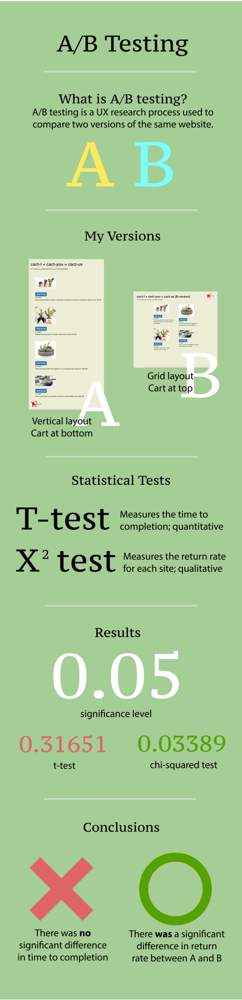

What makes one website better than another? Is it something tangible, like color? Is it the layout? Or is it something more?
For this project, I designed two versions of a cactus e-commerce website to conduct an A/B test. To measure how differently users responded, I created a Python script to calculate time to completion (t-test) and return rate (chi-squared test).
Here's the link to the website (note: versions are randomized on page load).
First, I created two different versions of the same website.
The main differences between the two pages were (1) layout and (2) checkout button location.
Based on the two versions I created, I developed a set of hypotheses for each of the measurements (time to completion and return rate).
I experienced a slight mishap during data collection -- I forked the wrong template repo, so I didn't have Flask/Heroku embedded in my website during our class's group data collection. As a result, I had trouble fulfilling the 40-user quota; however, I tried to make up for it by sending my website link to my high school friends, my college friends, my family, and posting on Piazza.
For my calculations, I implemented a Python script to calculate the t-score and chi-square value (as well as their p-values) based on a list of data points: one for time to completion, and one for return rate.
To calculate time to completion, I subtracted the initial page load timestamp from the timestamp of the last page the user visited. I accounted for edge cases like revisiting the same page twice, and I filtered out invalid users.
To calculate return rate, I counted the number of users who returned and didn't return to the original page after checking out. I also separated them by version A and version B in order to get separate return rates for each version.
The t-test for time to completion produced a p-value of 0.31651, which was greater than my significance level of 0.05. Based on this statistically insignificant information, I failed to reject the null hypothesis; in other words, I accepted that version A and version B have no difference in time to completion.
The chi-2 test for return rate produced a p-value of 0.03389, which was less than my significance level of 0.05. Based on this statistically significant information, I rejected the null hypothesis; in other words, I accepted that version B has a higher return rate than version A.
Using my results, I then designed an infographic to create a visual representation of my A/B testing results.
I also identified the limitations of my user study and what the results told me about design principles in general.
Limitations
Implications
Overall, this project was a great exercise in the quantitative side of user research. Until now, I'd only experienced the qualitiative aspect of UIUX (prototyping, sketching, sending surveys, etc.), so I enjoyed learning how numbers and statistics measure user experience. It's hard to quantify something like "what makes this website better than the other?", and A/B testing definitely removes some of that mystery.